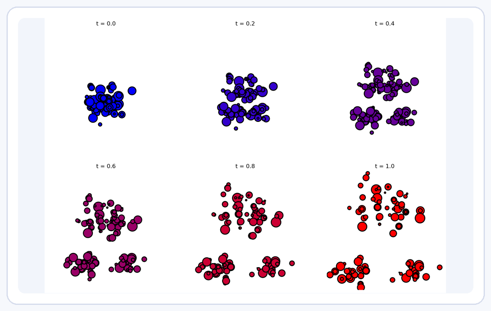
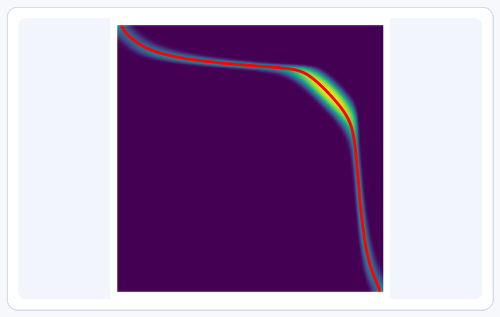
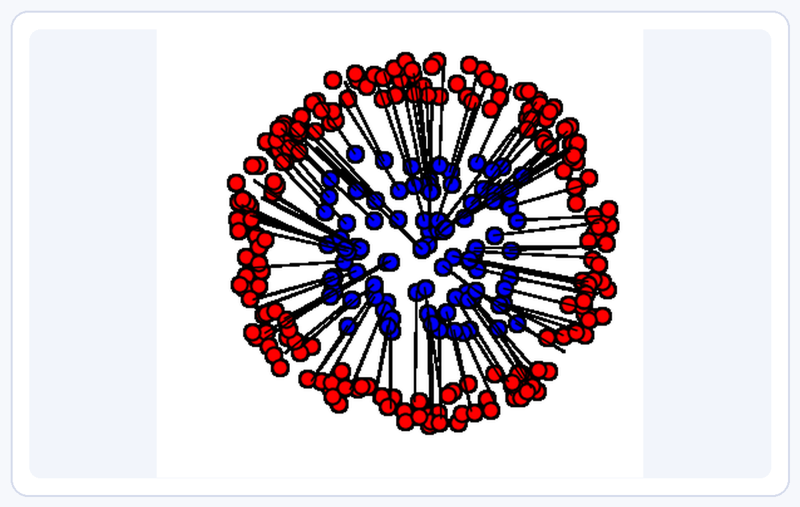
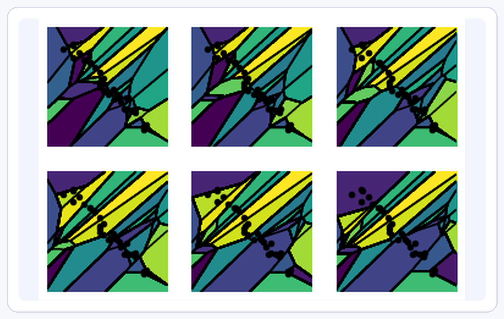
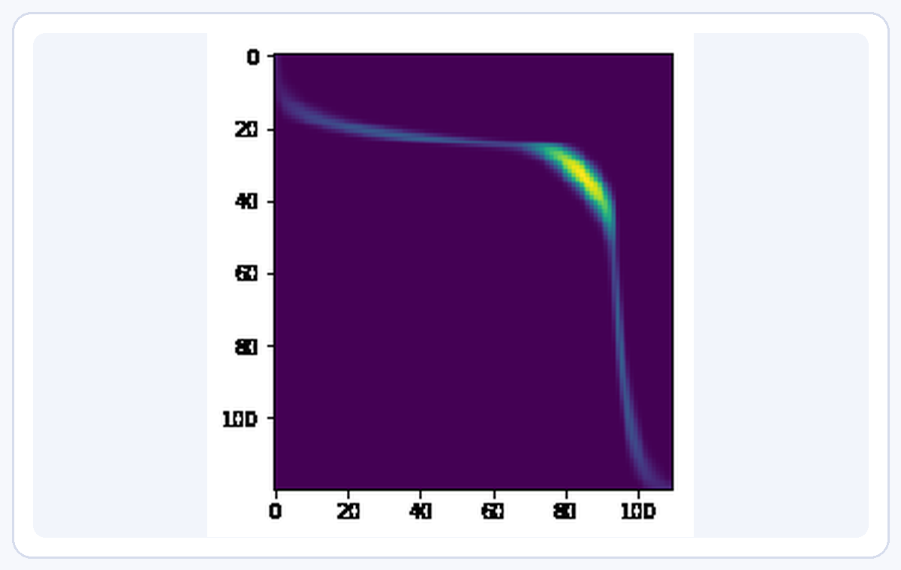
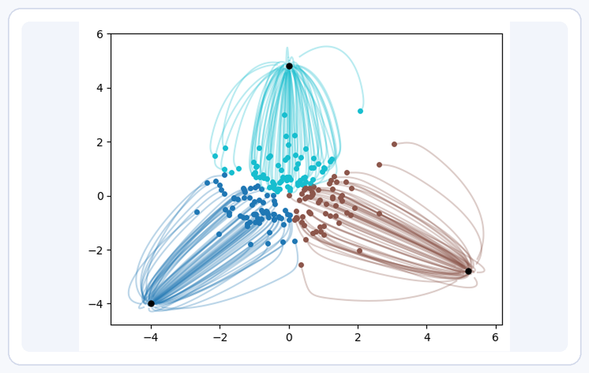
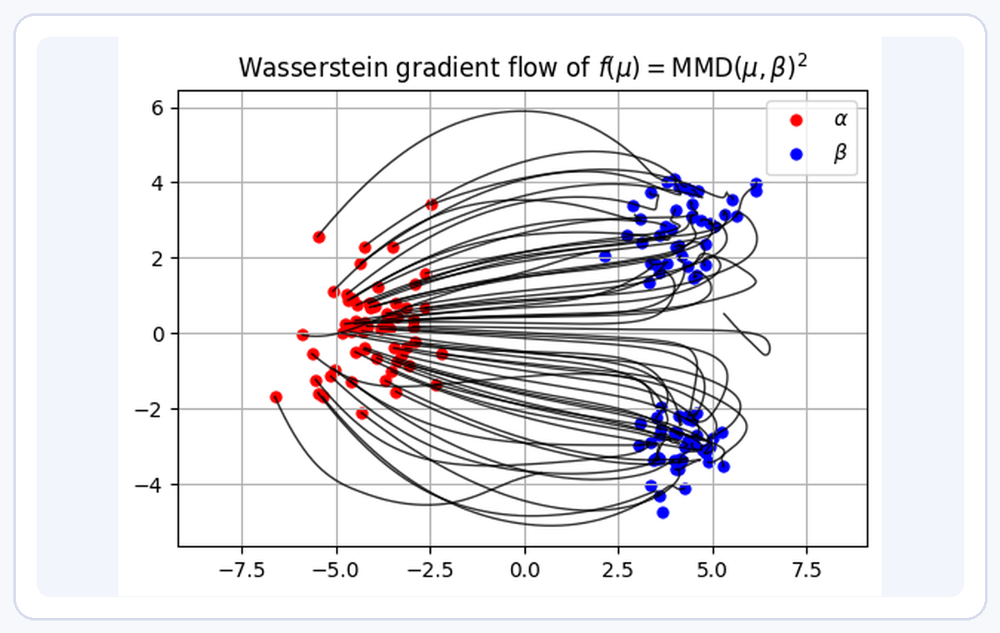
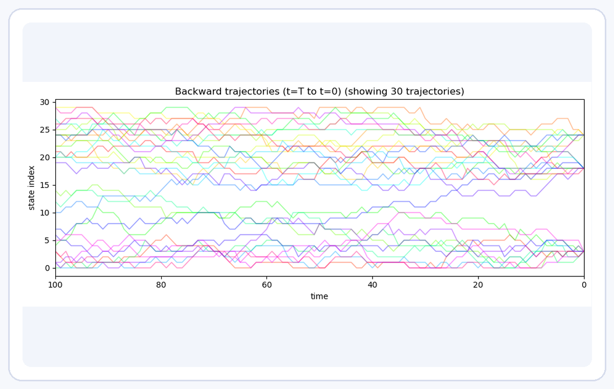

Assignments, one-dimensional transport, Monge maps, Kantorovich relaxation, duality and semi-discrete cells.
The book
The manuscript is organized around the mathematical objects that repeatedly appear in machine learning: couplings, maps, dual potentials, regularized losses, geometries on measures and particle flows.
Linear programming, auction and Hungarian iterations, Sinkhorn scaling, Bregman views, sliced and low-dimensional projections.
Gradient flows, MMD and adversarial losses, diffusion and flow matching, transformers, Gaussian closures and generalized OT.
Teaching notebooks
Shorter notebooks provide hands-on introductions to the main numerical ideas. They can be opened on GitHub or launched directly in Colab.

1. Optimal Transport with Linear Programming

2. Entropic Regularization of Optimal Transport

3. Advanced Topics on Sinkhorn Algorithms

4. Semi-discrete Optimal Transport

5. Unbalanced Optimal Transport

6. Diffusion Models and Optimal Transport

7. Wasserstein Gradient Flows of Interaction Functionals

8. Discrete Diffusion
Software
Most computational figures were produced with Python scientific tools, with many OT computations relying on the Python Optimal Transport library.
Python Optimal Transport, the central library used for many examples.
github.com/gpeyre/ot4ml contains the LaTeX source, notebooks and generated panels.
The repository also contains a MyST/Jupyter Book prototype in myst/.